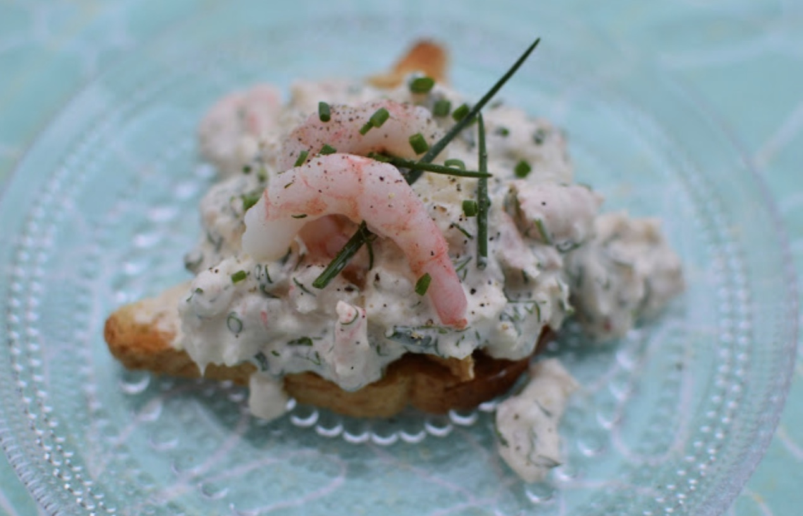

Skagen leipä
Valmistusaika: 25 min
Annosmäärä: 2-4 annosta
Ainesosat
- 4 paahtoleipää
- Oivariini
- 180 g katkarapuja
- 2 tl Dijon sinappia
- 2 rkl majoneesia
- 2 rkl creme fraichea
- Tilliä ja ruohosipulia
- Suola ja pippuri
- 1 sitruuna
Valmistusohje
- Valuta hyvin katkaravut. Pilko ravut pieneksi. Jätä muutama kokonainen koristeeksi. Sekoita rapujen sekaan hienonnettu tilli ja ruohosipuli sekä sinappi, majoneesi ja ranskankerma.
- Mausta vielä maltillisesti suolalla ja pippurilla. Jos sinulla on aikaa anna makuuntua jääkaapissa tovi.
- Paahda leivät paahtimessa. Voitele lämpimät, paahdetut leivät ja nostele katkarapuseos leipien päälle. Koristele tillillä, ruohosipulilla ja katkaravuilla.